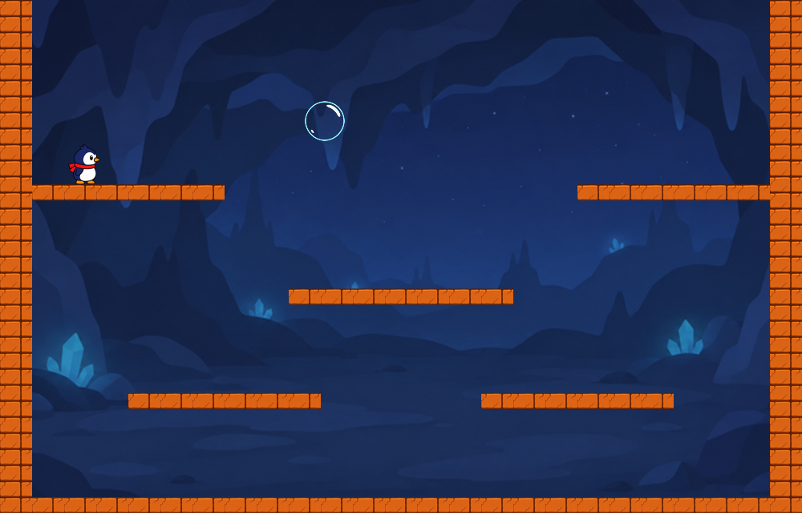

9장. 물방울 사라지기
8장에서는 스페이스를 눌러 물방울을 쏘고, 게임 루프에서 움직이게 했습니다. 아직 물방울을 지우는 코드가 없어 화면 위로 올라간 물방울도 목록에 남아 있습니다. 계속 쏘면 화면과 목록에 물방울이 쌓입니다.
이번 장에서는 일정 시간이 지난 물방울을 화면과 목록에서 지웁니다. 물방울을 쏜 뒤 기다리면 모두 사라지고 펭귄만 남습니다.

9-1 시간이 지난 물방울 지우기
물방울이 화면 밖으로 나간 뒤에도 목록에 남아 있으면 게임 루프는 계속 물방울을 움직입니다. 반대로 목록에서만 빼면 화면에 붙인 물방울 그림이 남습니다. 물방울의 수명이 끝나면 화면과 목록 양쪽에서 제거해야 합니다.
먼저 Bubble에 수명을 세는 값을 추가합니다. BubbleFrame은 수명이 끝난 물방울을 지우고, 바뀐 화면을 다시 그리도록 요청합니다.
물방울의 수명과 제거 코드 추가하기
수정 파일: src/bubble/game/Bubble.java
수정 파일: src/bubble/game/BubbleFrame.java
Bubble.java에 LIFE, time, popped 필드를 추가합니다. move() 맨 앞에는 수명을 확인하는 코드를 넣습니다. 이어서 BubbleFrame.java의 tick()에 물방울을 제거하는 코드를 추가합니다. 기존 이동 코드는 그대로 둡니다.
import javax.swing.ImageIcon;import javax.swing.JLabel;import lombok.Getter;public class Bubble extends JLabel { private static final int SPEED = 6; private static final int RANGE = 300; private static final int LIFE = 150; private int x; private int y; private Direction direction; private int distance; private int time; @Getter private boolean popped; public Bubble(Player player) { x = player.getX();⋯ } public void move() { time++; if (time > LIFE) { popped = true; } if (distance < RANGE) { if (direction == Direction.LEFT) { x -= SPEED; player.fall(floors); for (Bubble bubble : bubbles) { bubble.move(); if (bubble.isPopped()) { remove(bubble); } } bubbles.removeIf(bubble -> bubble.isPopped()); repaint(); } private void shoot() {move()가 호출된 횟수로 수명 세기
LIFE는 물방울의 수명 기준이며 값은 150입니다. time은 물방울이 만들어진 뒤 move()가 몇 번 호출됐는지 셉니다. 새 물방울의 time은 int 필드의 기본값인 0에서 시작합니다.
게임 루프가 bubble.move()를 호출할 때마다 time++로 값을 하나씩 늘립니다. 이어서 time > LIFE를 검사합니다. time이 150일 때는 물방울이 남아 있고, 151이 되면 popped가 true로 바뀝니다.
여기서 150은 초나 밀리초가 아닙니다. 게임 루프의 반복 횟수를 기준으로 정한 값입니다. 실제로 사라지기까지 걸리는 시간은 게임 루프가 실행되는 간격에 따라 달라집니다.
popped는 물방울이 제거할 대상인지 나타냅니다. 처음에는 boolean 필드의 기본값인 false입니다. 수명이 끝나면 true로 바뀝니다. BubbleFrame은 이 값으로 제거할 물방울을 구별합니다.
popped에 붙인 Lombok의 @Getter는 isPopped()를 만들어 줍니다. boolean 필드이므로 메서드 이름이 getPopped()가 아닌 isPopped()입니다. BubbleFrame은 이 메서드로 물방울의 상태를 확인합니다.
화면에서 지우고 목록에서 빼기
tick()은 먼저 각 물방울의 move()를 호출합니다. 이때 수명이 끝난 물방울은 popped가 true로 바뀝니다. 바로 다음의 if문이 popped 값을 확인합니다.
remove(bubble)은 창의 콘텐츠 영역에서 물방울 컴포넌트를 제거합니다. 앞 장에서 add(bubble)로 붙인 물방울을 떼어 내는 작업입니다. 다만 이 호출만으로 bubbles 목록의 항목까지 없어지지는 않습니다.
목록에서는 bubbles.removeIf(bubble -> bubble.isPopped())로 제거합니다. removeIf()는 조건의 결과가 true인 항목을 목록에서 빼는 메서드입니다. 화면에서 떼어 낸 물방울은 목록에서도 빠집니다. 다음 tick()부터는 그 물방울의 move()를 호출하지 않습니다.
removeIf()를 반복문 뒤에 둔 이유도 있습니다. 향상된 for문으로 목록을 순회하는 동안 같은 목록의 항목을 직접 제거하면 ConcurrentModificationException이 발생할 수 있습니다. 먼저 순회를 마친 뒤 제거하면 이 문제를 피할 수 있습니다. 반복문 안의 remove(bubble)은 화면의 컴포넌트를 제거합니다. 따라서 bubbles 목록의 순회에는 영향을 주지 않습니다.
제거한 자리를 다시 그리기
마지막의 repaint()는 바뀐 화면을 다시 그려 달라고 Swing에 요청합니다. 물방울을 제거한 자리에 남아 있을 수 있는 그림도 화면을 다시 그릴 때 지워집니다. repaint()를 호출한 줄에서 즉시 그리는 것은 아닙니다. Swing이 이후에 다시 그리도록 요청하는 메서드입니다.
한 번의 tick()에서는 물방울을 움직이며 수명을 확인합니다. 수명이 끝난 물방울은 화면에서 떼어 내고, 반복문이 끝나면 목록에서도 뺍니다. 마지막으로 repaint()를 호출해 화면에 변경 내용을 반영합니다.
먼저 쏜 물방울이 사라지는지 확인하기
변경한 파일을 저장하고 BubbleFrame을 Run As → Java Application으로 실행합니다. 스페이스를 짧게 눌러 물방울 하나를 쏩니다. 잠시 기다렸다가 한 번 더 짧게 누릅니다.
실행 결과
먼저 쏜 물방울은 수명이 먼저 끝나 사라집니다. 그때 나중에 쏜 물방울은 아직 남아 움직입니다. 두 물방울이 동시에 사라진다면 발사 간격을 조금 더 두고 확인합니다.

물방울마다 자신의 time을 따로 셉니다. 나중에 쏜 물방울도 만들어진 순간부터 수명을 셉니다. 스페이스를 더 누르지 않고 기다리면 남은 물방울도 사라집니다. 배경과 벽돌, 발판 위에는 펭귄만 남습니다.
9장 완성 코드 보관하기
확인을 마치면 src/bubble/game의 이번 장 완성 코드를 ex09에 복사해 보관합니다. 다음 장에서는 이 코드에 적군을 추가합니다.